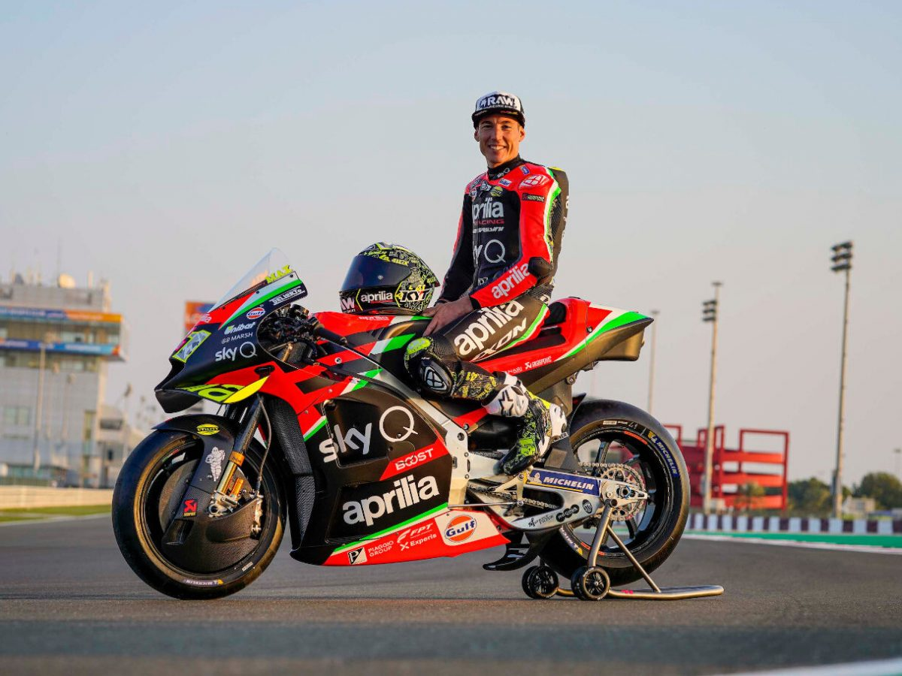
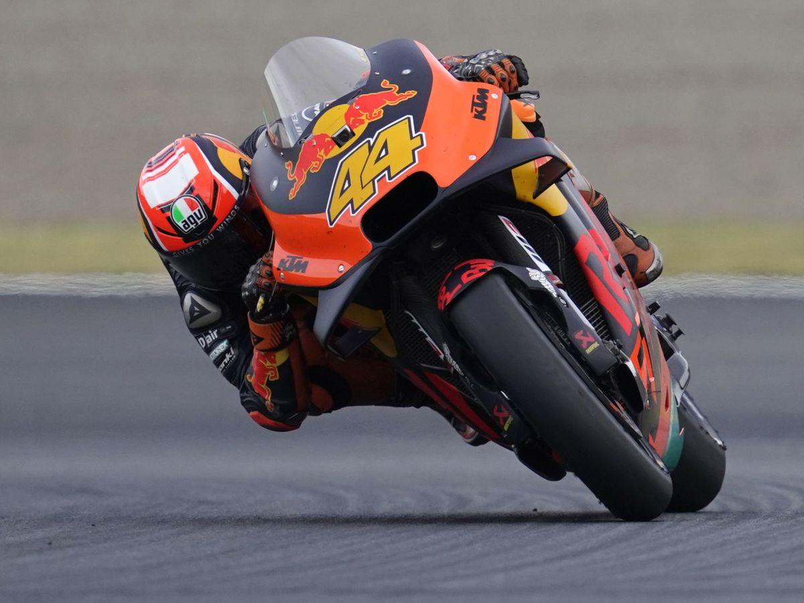
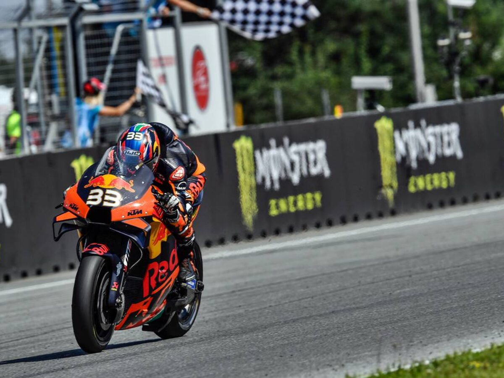
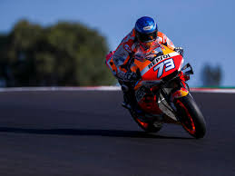

El Campeonato Mundial de Motociclismo pero que popularmente recibe el nombre de la categoría principal de MotoGP, es la máxima competición mundial de motociclismo de velocidad

30 Julio 1989
Aleix Espargaró Villà
Aleix Espargaró Villà es un piloto español. Actualmente participa en el campeonato del mundo de motociclismo en la categoría de MotoGP en el Aprilia Racing Team Gresini. Se proclamó campeón de España de 125cc en 2004 y consiguió su primer podio en el GP Aperol de Cataluña acabando en la tercera posición.

10 de junio de 1991
Pol Espargaró
Pol Espargaró Villà, es un piloto español de motociclismo, fue campeón del mundo de Moto2 en 2013. Actualmente compite en la categoría de MotoGP del Campeonato del mundo de motociclismo en el equipo Repsol Honda Team.

11 Agosto 1995
Brad Binder
Brad Binder es un piloto sudafricano de motociclismo que compite en el Campeonato del Mundo de Motociclismo en la categoría MotoGP con en el equipo Red Bull KTM Factory Racing. Su hermano menor, Darryn, también es piloto en la división menor del Campeonato Mundial de Motociclismo.

23 Marzo 1986
Álex Márquez
Álex Márquez Alentà es un piloto de motociclismo español que actualmente corre en la categoría de MotoGP. Ha ganado dos títulos del Campeonato del Mundo de Motociclismo. Entre las temporadas 2012 a 2014 corrió en la categoría de Moto3 en el equipo del Estrella Galicia 0,0.